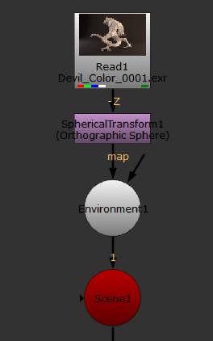
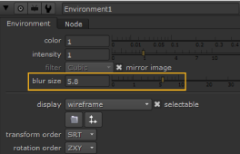

An environment light is a light that illuminates the objects using an image of light from a real-world environment. This image-based lighting is generated using High Dynamic Range Images (HDRI). When HDR images are created, several differently exposed images are combined to produce a single image of the surrounding environment. As a result, HDR images have a wide range of values between light and dark areas, and represent the lighting conditions of the real world more accurately.
To use environment light, you first need to shoot a real life environment as an HDR image. Using the SphericalTransform node, you then convert this image into a spherical mapped image. The sphere is used to surround the 3D objects, so that the mapped image color illuminates them.
Environment light only works with shiny object materials that can reflect the mapped image. It results in a very realistic lighting that makes it easier to integrate the objects into the environment.
| 1. | Read an HDR image of the environment into your script. |
| 2. | Select Transform > SphericalTransform to insert a SphericalTransform node after the HDR image. You use this node to convert the HDR image into a spherical mapped image. In the node’s controls, select the Input Type and the Output Type (in this case, Sphere). |
| 3. | Select 3D > Lights > Environment to insert an Environment node in your script. Connect the SphericalTransform node to the Environment node’s map input, and the Environment node to the Scene node. |

| 4. | In the Environment node’s controls, adjust the following: |
• Drag the color slider to change the light color.
• Drag the intensity slider to change the brightness of the light.
• From the filter dropdown menu, select a filtering algorithm for the map image. For more information, see Choosing a Filtering Algorithm.
• To change the blur size of the map image, adjust the blur size slider.

|
|